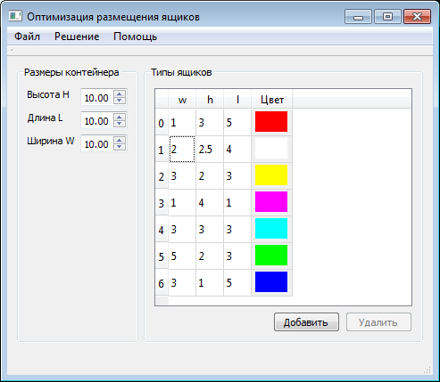
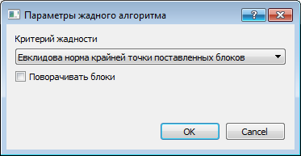
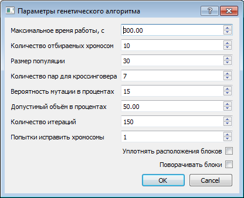

Окно задания входных данных задачи

В таблице "Типы ящиков" показаны параметры ящиков(блоков).
Для изменения параметра необходимо два раза щёлкнуть на соответствующую ячеку.
Кнопка "Добавить" добавляет новую строчку в таблицу.
Кнопка "Удалить" удаленяет из таблицы выделенные строки.
В области "Размеры контейнера" вводятся габариты контейнера, в котором будут размещаться ящики.
Для запуска алгоритмов решения необходимо использовать пункт "Решение" в верхнем меню.
Окно параметров жадного алгоритма

Окно параметров генетического алгоритма

Максимальное время работы - время работы алгоритма в секундах
Количество отбираемых хромосом - количество хромосом, оставляемых для следующей итерации алгоритма
Размер популяции -
Количество пар для кроссинговера -
Вероятность мутации в процентах -
Допустимый объём в процентах -
Количество итераций - количество итераций алгоритма
Попытки исправить хромосомы - количество попыток изменения хромосом, в которых блоки не вмещаются в контейнер
Окно результатов
В окне результатов показывается найденное решение задачи.
В списке "Размещение ящиков" приведены габариты и координаты центров размещённых ящиков.
В правой части окна показывается изображение ящиков внутри контейнера.
Синим цветом показан минимальный огибающий ящики параллелепипед.
При выделении контейнеров в списке они выделяются красными рамками в изображении.
Чёрным цветом показаны габариты контейнера и оси координат.
Прокручивание камеры в режиме "Свободная камеры" происходит при зажатии левой кнопки мыши внутри области изображения.
Можно изменить приближение камеры прокручиванием колёсика мышки или с помощью нижнего слайдера.